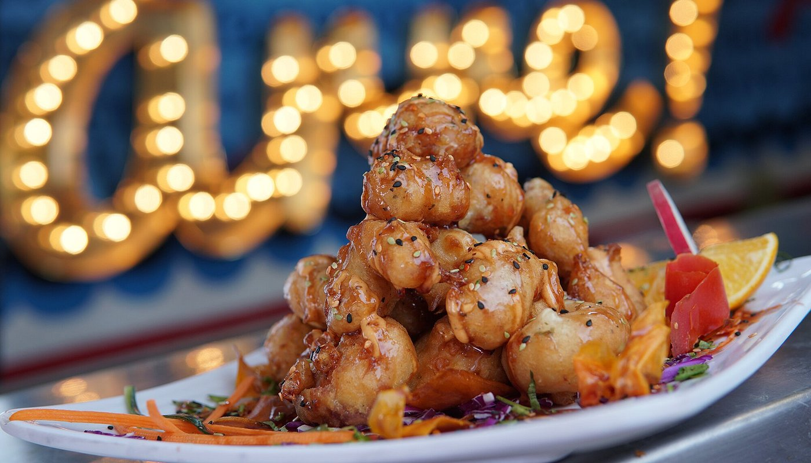

Sinaloense El mas delicioso y alegre restaurante de mariscos del puerto, ambientado con música de banda y norteño banda en vivo, auténtica cocina sinaloense. Venir a El Sinaloense es llevarse como recuerdo lo mejor de nuestra tierra.
